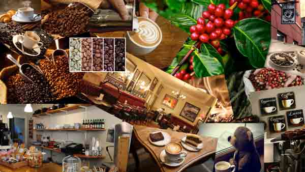
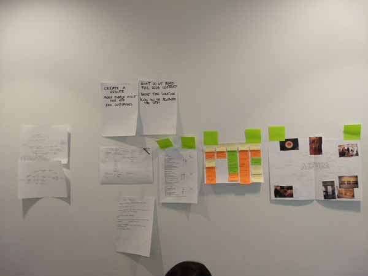
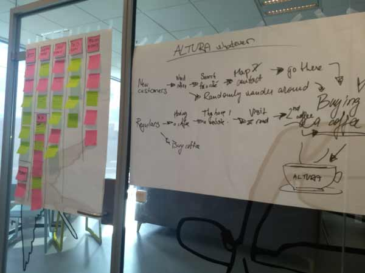
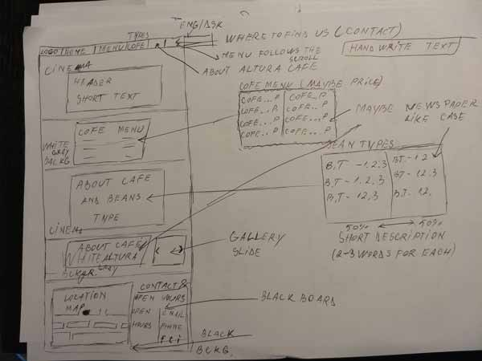

First project, first website
Altura Cafe was our first customer we did a website for. It was a real challenge being the first project at school, but it was also a team project, so we managed to help each other with it. Yet, it was definetly a very interesting project. But in my opinion it was also the most stressful one. Why? Well...
For our first project no one knew what to expect for, and then we got the requirement. To create a website for a company that is realted to Aarhus 2017 - Cultural Capital of Europe. So from here, the first challenge was to find a place which needed and allowed us to create a website for. And so, after sending e-mails and walking trough the city asking different locations if they want a website, we finally had an yes as an answer. This came from a small cafe in center of Aarhus, called Altura. And from here, the real work starts.
Research and Design
After we found the place, next thing to do was to gather informations and research it. And how to do it? Well, creating some questions for customers, employees, owner, and having interviews with them
Some people didn't agree, some people did, the owner of course was ok to answer to a few questions, the employees also.
During the research process we had to gather all kind of information, like why the customers come there, why they prefer Altura Cafe instead of any other cafe, what feelings the owner wants to share, etc.
But also we had to take pictures of the place, to analyse them, to have the main colours in our face, but also special elements, like the decoration inside, which was an organised mess.
One week for a website!
I still remember the process behind creation of Altura's Website. We started Monday with creating a map of everything we had, trying to organise all the information and see what attract the most customers there and why. But we also had to understand how the business works, and for this the main tool we used was Business Model Canvas, a special map were we had to put all the informations we had, like key parteners, delivery ways, etc
Tuesday came very fast after a long day of Monday, and we had to create different design ideas, each member of the team, then, by the end of the day, we voted on which ideas we keep.
And as Wednesday came, the design process came too, from sketches to creating a Photoshop image of how the website should look like, moodboard, wireframe and so on. If Wednesday was the easiest day in this entire process, Thursday felt the hardest.
For Thursday, the task was to create a prototype of the website by coding it, and it was very hard, because we were all at the beggining and took a long time and a lot of stress.
Thursday passed fast, and Friday came. The deadline day, everything left was to ask for feedback and present it to the teachers, and the entire website looked good in the end, everyone's website was a very strong piece of technology and art
To Altura Cafe's Website...



